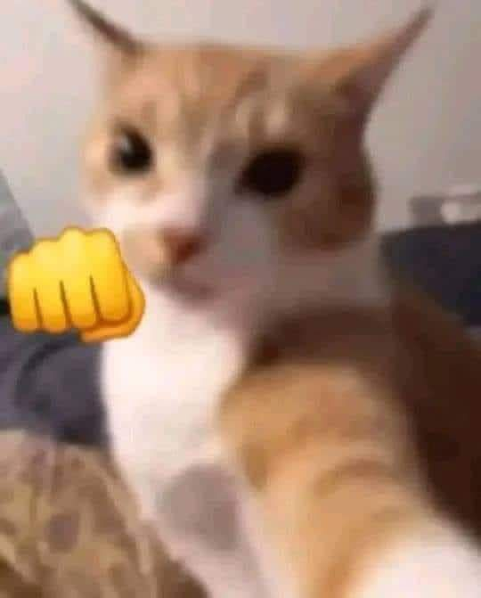

Evita caos.
Mira el siguente video para que veas lo que te espera y te dare una paqueños consejos.
- como no dejar nada de comida a la vista de estos animales, son tecnicamente como niños sin fundo.
- no compres nada de vidrio y si los haces procura dejalo en un sitio fuera de su alcanse, enserio deja el objecto en lugares donde sea inplosible que esto lo tiren.
- guarda la comida para ellos en un lugar con llave, te vas a somprende como estos logran aprende a abri puestas. te lo digo en serio consigue seguros para las pequeñas puertas de la cocina, es realmente molestos escucharlos en plena noche y los traste chocando entre si.(no lo reconmiendo, una vez me desperte a las 5 por su escandalo)
- otro y ultimo es que busques formas para gastar su energia, no se consige un pequeño ratos de juguete y juego con el, si no lo hace este se pondar en modo demonio.) por el momento no tengo un video deesa etapa, cuando lo tengo lo ponder aqui para que entiendad a lo que me refiero.
pero bueno est oes todos, agradesco que veas este sitio, (un poco simple en mi opinion , pero es dificil hacer algo con un programa un poco limitado.)
una cosas mas, antes de que vayas a conseguir un gato.
te pido de favor que seas muy paciente y que no le hagas daño a ningún ser vivo, incluyendo a tu mascota .
el es tu amigo y confia en ti, si lo asustas o juegos muy brusco.
el te evitara a toda costa.
asi que se dulce y bueno que tu amigo felino. si no, la loca de los gatos ira por ti esta noche!!!!!!
estas advertido.

es todo, puedes irte !!!!